本文旨在说明 EWP3.2 升级至 5.x 版本所需的必要改动，对于新版本的功能介绍、API 规范、配置说明等内容该文档内不会详细描述。
EWP5.x依赖的Erlang和Yaws分别升级到了R15B和1.95版本，点击链接进行下载，用户名和密码均为public。
使用指令“rpm -e 包名”删除指定包，指令“rpm -ivh 文件名”安装指定包。
conf 配置项的子配置在新版本中均作为单独配置项，不再作为 conf 的子配置。
在 3.2 版本中 ewp.conf 的 conf 配置项:
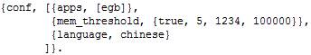
新版本中 conf 的子配置均变更为单独配置项:
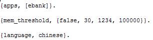
session 清理开关从 server 的子配置 ewp_ets_cleaner 变成 session_cleanup 配置项。
在 3.2 版本中开启 session 清理服务的配置:
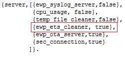
新版本中开启 session 清理服务的配置:
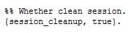
增加 EWP 的接口映射（controllers）配置。在 3.2 版本中，EWP 接口映射无法配置。新版本中可由 APP 配置 EWP 接口映射。
新版本中添加的 EWP 接口映射配置:
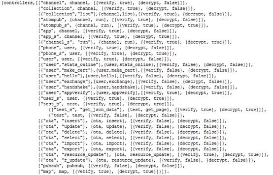
server 配置格式没有变更，但变更了可配置的 server。
server 变更表:
| 删除的 server | 增加的 server |
|---|---|
| ewp_ets_cleaner | cron_service（定时任务） |
| db_server | ewp_websocket（websocket 开发基础服务） |
| ewp_template_file_cleaner | template_monitor（cs 模板自动更新） |
| ewp_syslog_server | - |
| wurfl_server | - |
| ewp_ota_server | - |
安全信道相关配置由 security.conf 变更到 ewp.conf 的 security 配置中，具体变更为：
{oldest_supported_ver, {1, 0}} ，不配置时默认为最新版本（1.4）；{client_verify,[{flag,false}]} ，禁用放篡改功能。3.2 版本的 security.conf 配置:
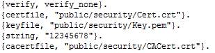
新版本中由 ewp.conf 的 security 设置安全信道相关配置:
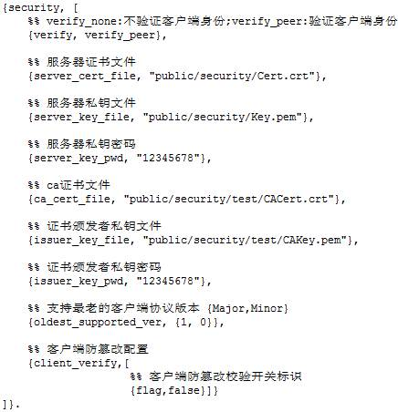
数据库配置由 db.conf 转移到 ewp.conf 的 databases 配置中，具体变更为：
3.2 版本的 db.conf 配置:
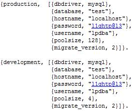
新版本中由 ewp.conf 的 databases 设置数据库相关配置:
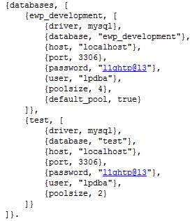
新版本支持配置文件引入功能，可以将相关的配置放入其他文件统一管理，再将其引入到 ewp.conf 中。具体格式为 {include, 配置文件路径}。
新版本中可以引入其他配置文件:
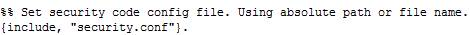
不建议在 opaque 里定制配置项，建议用 app.conf 设置配置项，请参考 app.conf 。原配置项定制方式和获取方式依然支持。
session 超时配置现在须修改 ewp.conf 的 session_timeout 和 login_session_timeout 配置。
新版本的 ewp.conf 中 session 超时的相关配置:
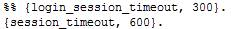
新版本中支持管理后台功能，须在 yaws.conf 中增加 server 配置。例如：
<server admin>
port = 4000
listen = 0.0.0.0
docroot = ../ewp/public/admin
appmods = </admin, admin_controller></, error_url>
<opaque>
admin = true
</opaque>
</server>
新版本中，App 定制的配置均在 app.conf 文件中配置，配置格式为 {Key,Value}，文件名称须与 App 名称相符（如 App 名称为 ebank，则配置文件名称为 ebank.conf）。通过 ewp_conf_util:get_app_conf_value(App, Key) 和 ewp_conf_util:get_app_conf_value(App, Key,Default) 可在后台代码中获取配置内容。
新版本中获取配置内容的方法:
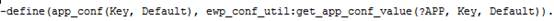
移除 channels 和 collections 配置。相关配置放置在单独的文件中，并由 app.conf 的 menu 配置项指定该文件的路径，不配置时默认为 config/channel.conf。菜单配置格式为：
{channels, [...]}.
{collections, [...]}.
注意 channels 和 collections 配置结束符为 ' . ' 不是 ' , ' 。
新版本中由 app.conf 的 menu 配置项设置菜单配置的文件路径:
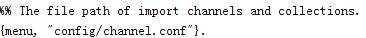
channel.conf 文件中 channels 配置片段:
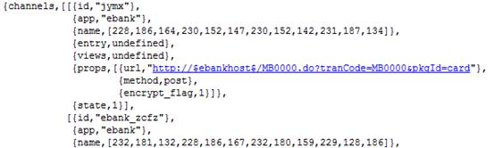
channel.conf 文件中 collections 配置片段:
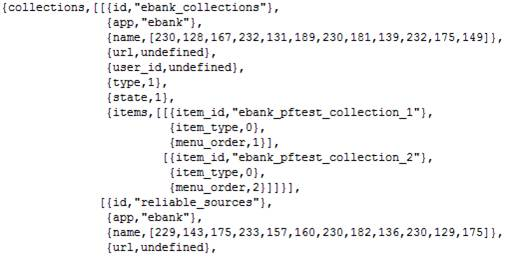
新版本中删除了 ota_phones 配置。可将该配置放在 app.conf 中，请参考 app.conf 。
.app 文件增加了 cs_dirs 配置，可配置 cs 文件所在的所有根目录。可选配置，默认为 public/cs。配置格式为 {cs_dirs, [Path1, Path2…]}
新版本中支持了在数据库或 mnesia 中存储菜单信息的功能。在 .app 文件中可以通过 menu 配置来指定菜单的存储类型，加载菜单时会从相应的存储中读取菜单信息。配置格式为 {menu, db|mnesia}。
如果需要定制菜单加载逻辑，menu 须配置为 {Mod,Fun}，加载菜单时将会调用 Mod:Fun()函数。注意，此时不能使用管理后台对菜单进行管理。
新版本的 App 可以在 .app 文件中通过 databases 配置项设置自己的数据库配置，配置格式请参考 数据库配置。该配置为可选配置。
新版本的 .app 文件新增了 migrate_version 配置来管理数据库迁移，格式为 {存储名称，目标版本}。该配置为可选配置。关于数据库版本迁移请参考 migrate。
新版本的 plugins 配置没有任何变更，需要注意的是，如使用 security 模块定制加解密流程，则 security 不能配置在 plugins 列表中。
新版本在 controllers 配置中增加了验签开关配置项，此时 controller 配置格式为 {UrlSpec, ControllerSpec, [{decrypt, boolean()}, {verify, boolean()}]}，其中 UrlSpec 和 ControllerSpec 与 3.2 版本相同。3.2 版本的加解密开关配置项扩展成 [{decrypt, boolean()}, {verify, boolean()}]，decrypt 为加解密开关，默认为 false，verify 为验签开关，默认为 true。原配置项 {UrlSpec, ControllerSpec, boolean()} 与新版本中 {UrlSpec, ControllerSpec, [{decrypt, boolean()}, {verify, true}]} 等同。
在新版本中，获取参数时须注意以下几点：
?param(Key) 或 ?param(Key, Default) 来获取请求参数。ewp_params:save_yaws_arg(A) 才可以使用 ?param 宏。ewp_params:param(app_name) 变更为 ?param(app) 或 ewp_params:param(app)。在新版本中，获取 session 数据时须注意以下几点：
?session(Key) 或 ?session(Key, Default) 以及 session_service 提供的接口。{SessionId,SessionData} = session_service:read() 或 {SessionId,SessionData} = session_service:read(Arg)在新版本中，获取 yaws arg 记录的数据时须注意以下几点：
?arg(Key) 或 ?arg(Key, Default)。在新版本中，获取 XML 节点数据时须注意以下几点：
Term = xml_eng:xml_to_term(XMLString) 解析。?ewp_xpath(Path, Term) 取值。示例：[ErrorCode] = ?ewp_xpath("root/errorCode", Term)3.2 版本中，执行一次一密解密流程中需要从 session 数据获取 cipher_state，并判断是否为 undefined，然后调用 sec_cipher:decrypt_password({Password, CipherState}) 进行解密。
在新版本中，cipher_state 将无法在 session 中获取。解密可以直接调用 sec_cipher:decrypt_password(Password) 方法。
在新版本中，EWP 提供的各 plugin 的回调函数规范发生了一些改动，本章将列举与 3.2 版本相比，新版本的回调函数规范的改动。
新版本的 channel plugin 的回调函数规范具体改动如下：
role_auth/2 成功时返回由 {true, P, User} 变为 {true, User}。list_collection_items(OutputFormat, P, User) 变更为 list_collection_items(OutputFormat, User)。transform(Format, Res, Channel, A) 变更为 transform(Format, Res, Channel)。Res有三种情况：1.请求远程时，Res为{http_respones, Headers, Body}（原来只有Body）。2.不请求远程时，Res为[{res, ParamsList}]。3.如果菜单配置中某些频道配置了channels->props->request配置为Func，则执行这些频道交易时，Res为App_channel:Func/4的返回结果。gen_query_request(Channel, RenderedUrl, AppendedParams, P, User) 变更为 gen_query_request(Channel, RenderedUrl)。Func(Channel, FormUrl, P, User, A, TranCode)变更为Func(Channel, FormUrl, User, TranCode)。request回调可在channels->props->request配置回调函数Func，配置之后指定频道交易在请求远程时不再调用gen_query_request/2回调，而是调用App_channel:Func/4。request回调返回值将作为transform/3的第二个输入参数。get_cache_mapping 未变更。encrypt/1。新版本的 user plugin 的回调函数规范改动如下：
get_session_key/1。auth/1 成功时返回由 {true, User, SessionId, P, Extras} 变更为 {ok, Data}。gen_login_page(Format, User, SessionId, P, Extras) 变更为 gen_login_page(Format, Data)。logout/1 未变更。main_page(Arg)，生成 wap 主页。新版本的 security plugin 的回调函数规范改动如下：
init_content(A, SessionID) 变更为 init_content(A)。新版本的 ota plugin 的回调函数规范改动如下：
download_page() -> string() 生成下载页面。check_target_url(Url::string()) -> ok | ErrorPage::xhtml() 检查重定向 url 的合法性。error_page(ErrorMsg::string()) -> string() 生成错误页面。新版本的 migrate plugin 的回调函数规范改动如下：
version() 变更为 version(DBName)。migrate(Version, Action) 变更为 migrate(DBName, Version, Action)。新版本的 ets_db plugin 的回调函数规范改动如下：
default_channel_props()。新版本对 CS 模板进行了优化，涉及到的改动如下：
<?cs include:shortcut ?>，其中 shortcut 为定义的 cs 变量。部分 EWP API 在新版本中也进行了优化，本章将说明这些 API 的变更。
ewp_channel_util 提供的 API 变更如下：
get_cskey/2 第一个参数不再支持 atom。render/4 变更为 render/3，删除第二个参数。collection_to_cs_tuplelist/6 变更为 collection_to_cs_tuplelist/3 保留前三个参数。list_collection_items/2 返回格式改变:
3.2 版本中 channels 返回格式:
[{channels,
ChannelId,
[{id,ChannelId},{name,Name},{entry,Entry},{views,Views},{props,Props }]
}]
新版本中 channels 返回格式: [{mnesia, channels, channel_record()}]
其中 channel_record() 定义为:
-record(channel,{id, app, name, entry, views, props, state}).
引入 ewp.hrl 宏即可使用 channel record。
3.2 版本中 collections 返回格式:
[{collections,
CollectionId,
[
{id,CollectionId},
{name,Name},
{url,Url},
{user_id,UserId},
{level,Level},
{collection_type,Type},
{state,State}
]
}]
新版本中 collections 返回格式: [{mnesia, collections, collection_record()}]
其中 collection_record() 定义为： -record(collection,{id, app, name, url, user_id, type, state}).
引入 ewp.hrl 宏即可使用 collection record。
db_api 提供的 API 变更如下：
execute_sql/1、insert/2、update/3 和 delete/2 未变更。select(TableList, FieldList, Where, Extras, Distinct) 变更为 select(TableList, Where) 和 select(TableList, Where, Opts)，FieldList、Extras、Distinct 三个参数可通过 Opts 的 {fileds, FieldList}、{ extras, Extras } 和 { distinct, Distinct} 选项来指定，即 select(TableList, FieldList, Where, Extras, Distinct) 在新版本中须修改成 elect(TableList, Where, [{fileds, FieldList}, { extras, Extras }, { distinct, Distinct}])。select_join/8 接口，新版本可使用 select({Table1, Join, Table2, On}, Where) 和 select({Table1, Join, Table2, On}, Where, Opts) 完成相同功能。trans_insert/3 接口在新版本中须调用 insert/2。prepare/2 和 prepare_execute/2 接口未变更，删除 unprepare/1 接口。ewp_app_manager: find_app_dir/1 函数更名为 ewp_app_manager: get_app_dir/1
新版本中删除了 atom_map.hrl、ewp_en.hrl 和 action.hrl 三个文件。同时 3.2 版本中 ewp.hrl 定义的一些宏做了如下变动：
INVALID_COORD、UTC_GREGORIAN_START、LINGTU_MAPSERVER_URI、PRIVILEGE_USER、PRIVILEGE_SHARED、ATOM_NS、ATOMPUB_NS、LightPoleNS、ATOM_ATTRS、ATOMPUB_ATTRS、FEED_TYPE_APP、FEED_TYPE_ATOM、FEED_TYPE_FAVORITE、FEED_TYPE_CALENDAR、NOT_SUPPORT_FUNCTION 和 EMP_NODEIDupload/ 改为 EWP 目录下的 public/data/upload/新版本中，EWP 第一次启动时不会自动读取菜单信息，需要手动将菜单信息导入。导入之后，EWP 在以后启动时便可以自动获取菜单信息。导入方式有两种：
config/channel.conf 文件中配置 channels 和 collections，或者在 app.conf 文件的 menu 配置项来指定菜单配置文件路径。在启动服务后，调用 ewp_channel_util:import_menu(App) 来导入菜单。管理后台->业务频道管理->菜单展现 页面中上传菜单配置文件。